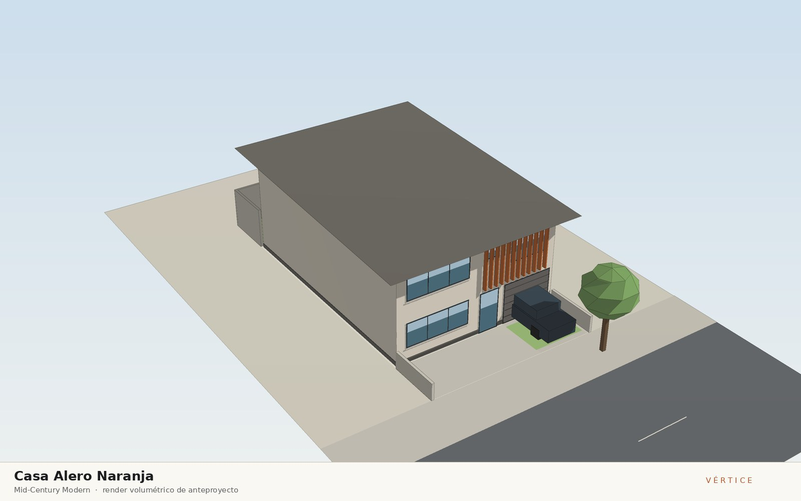
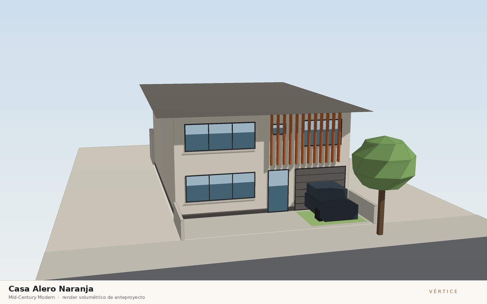
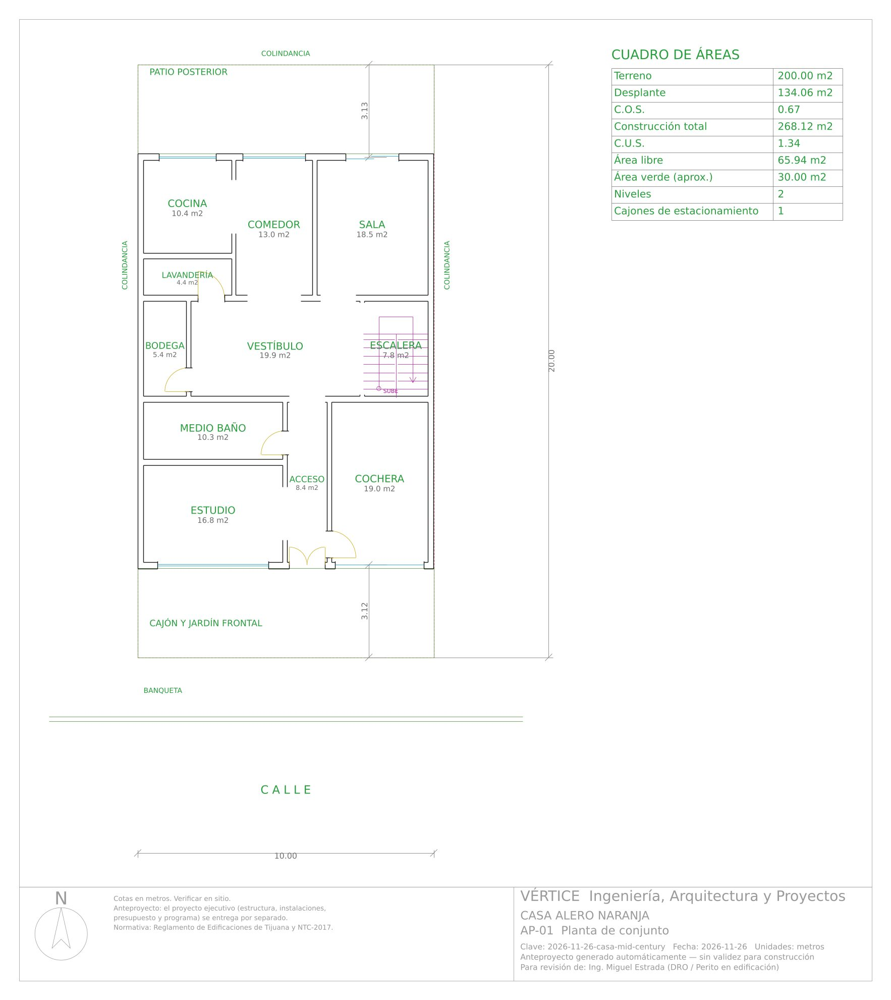
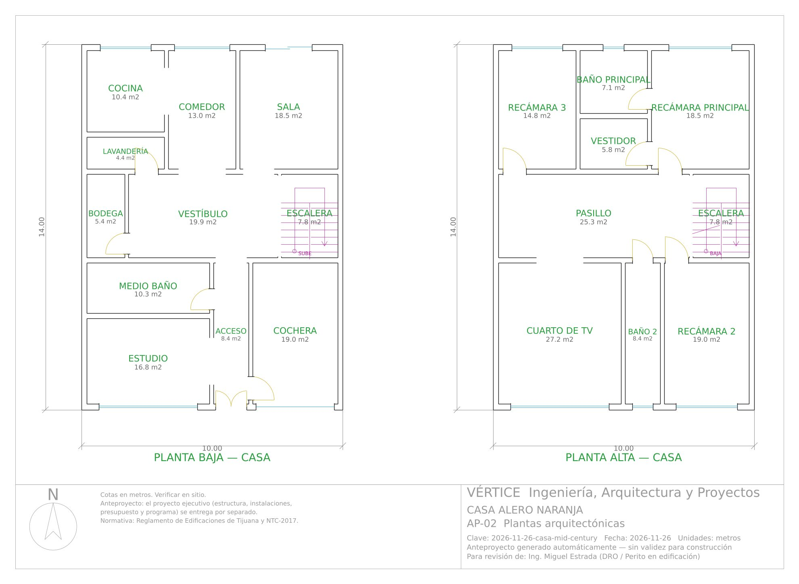
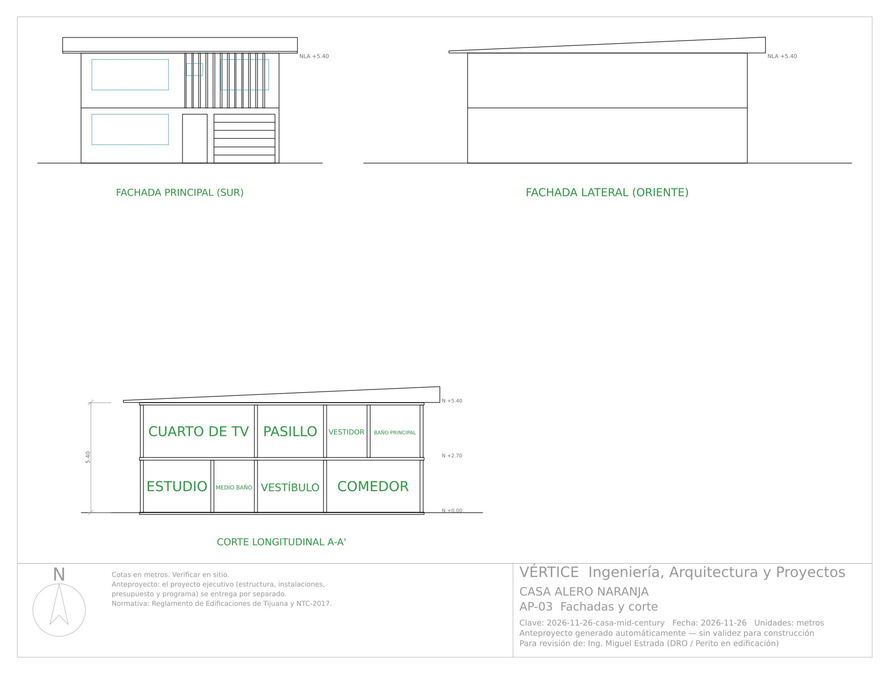

26 de noviembre de 2026 · Casa habitación
Casa Alero Naranja
Corriente: Mid-Century Modern

Concepto
Vivienda de dos niveles en un lote de 10 x 20 m en Tijuana que reinterpreta el Mid-Century Modern californiano —primo cercano de la ciudad— con una cubierta de una sola agua de pendiente baja cuyo alero amplio se extiende hacia la calle y sombrea la fachada sur, la más asoleada, sin cerrar la vista. Con el estudio al frente la fachada tiene poco muro, así que una celosía de listones verticales de madera termotratada teñida en naranja quemado —el gesto de las casas Eichler de los años cincuenta— la ordena frente a la recámara 2 y el baño 2, filtra el sol bajo de la tarde y da privacidad a la recámara 2 sin cerrarle la ventilación, y su ritmo contrasta con el aplanado crema liso y con los grandes ventanales del estudio y la recámara de la esquina. Sala, comedor y cocina se vuelcan al patio posterior con grandes ventanales, y la brisa marina del poniente cruza la casa por el vestíbulo hasta la calle; las colindancias oriente y poniente quedan ciegas, como pide un lote medianero.
Dictamen del arquitecto
- Terreno de 10.00 x 20.00 m (200 m²); casa de 9.75 x 13.75 m a ejes en 2 niveles, 268.1 m² construidos con desplante de 134.1 m²: COS 0.67 y CUS 1.34, 3.12 m de cajón y jardín al frente y 3.13 m de patio posterior; colindancias oriente y poniente ciegas. Uso habitacional unifamiliar; COS y CUS por verificar con el PDU de Tijuana. Partido 'estudio_frente' en espejo (cochera al oriente), distinto de los dos últimos proyectos de 10 x 20 m (clásico, 18 y 22 de noviembre).
- Mid-Century Modern con dos rasgos que trabajan juntos: cubierta de una agua de lámina al 8 % con alero amplio de 0.90 m que sombrea la fachada sur, y celosía de listones verticales de madera termotratada naranja quemado frente a la recámara 2 y el baño 2, que ordena una fachada con poco muro por el estudio al frente. Proporción de vano 0.62. Se descartaron muro de acento y jardinera porque la fachada no tiene paño ciego suficiente; no repite el marco, los pilotis ni la banda corrida de ayer.
- Recorrido: acceso (1.50 x 5.60 m, puerta doble de 1.20 m) que reparte a estudio (16.8 m²), medio baño (10.3 m², interior: extractor obligatorio) y cochera (3.40 x 5.60 m) → vestíbulo (19.9 m²) con escalera de 1.15 m (peralte 16.9 cm, huella 30.2 cm, 2p + h = 64 cm), bodega y lavandería → sala (18.5 m²) y comedor (13.0 m²) abierto a la cocina (10.4 m²), con cancel corredizo de 1.80 m al patio posterior.
- Planta alta: pasillo-estancia (25.3 m²) que da a cuarto de TV (4.85 x 5.60 m), baño 2 (8.4 m²) y recámara 2 (3.40 x 5.60 m) al frente, recámara 3 (3.12 x 4.75 m) y recámara principal (3.90 x 4.75 m) con vestidor y baño (7.1 m²) que se entran sólo desde ella. Recámaras ≥ 2.70 m de lado con ventana al exterior; altura libre 2.58 / 2.57 m (≥ 2.30 m).
- Cédula de acabados y cancelería completas (aluminio bronce); 243.6 m² de piso iguales en planos y presupuesto. Motor corregido: marcas de nivel de A-05 fuera del alero de la cubierta inclinada, globos de ejes a menos de 0.74 m escalonados (ejes 5 y 6, a 0.50 m) y lavabos fuera del abatimiento de la puerta (medio baño) y de la regadera (baño principal) en A-02.
Dictamen de ingeniería
- Veredicto: construible conforme a norma, con 0 errores y 0 avisos en las 29 verificaciones de coordinación. El ciclo arquitectura–estructura limitó los vanos abiertos entre locales a 1.80 m y pasó a block de 20 cm los muros en X (Y de 15 cm); 1 muro de planta alta sin apoyo continuo va como divisorio ligero de tablaroca y los castillos no interfieren con vanos.
- Mampostería confinada (Q = 1.5): 52 castillos K-1 15x20 en planta baja y 50 en planta alta, dalas de desplante, cerramiento y pretil, y 8 cerramientos T-1 a T-8 de 15x30 a 20x35 (T-3 20x35 de 3.91 m con 2 #6). Método simplificado NTC: X VR 66.4 t ≥ Vu 57.7 t (holgura de 15 %); Y VR 101.8 t ≥ 57.7 t. V basal 52.5 t con c = 0.213 supuesto y T = 0.17 s.
- Losas macizas de 12 cm en entrepiso (≥ 11.8 cm) y 13 cm en azotea (≥ 12.6 cm), #3 @ 20 cm (@ 15 en sala y cuarto de TV) con bastones sobre apoyos; escalera de losa h = 14 cm con #3 @ 15. Cubierta de lámina sobre largueros de PTR (30 kg/m² incluidos en la carga muerta de azotea). Zapatas corridas B = 50 cm, h = 20 cm, #4 @ 33: ZC-1 perimetral excéntrica en linderos (q = 5.14 t/m²) y ZC-2 interior (q = 7.45 t/m², 62 % de la capacidad) contra una q adm supuesta de 12 t/m² a -0.80 m: requiere estudio de mecánica de suelos y confirmar el espectro sísmico del sitio. Cuantificación: 5,259 kg de acero y 63.7 m³ de concreto.
- Instalaciones: 4 ocupantes, 22 UM en 11 muebles (1.21 L/s), alimentación general Ø 25 mm, cisterna de 2 m³ y calentador de paso a gas; 25 UD, bajadas del baño 2 (al acceso) y del baño principal (al comedor) junto a muro, colector Ø100 mm PVC al 2 % a la red CESPT con ventilación Ø50 mm; 180 m² de captación, 5.0 L/s por canalón perimetral a 2 bajadas Ø100 mm separadas del sanitario; 16 circuitos (14,268 W instalados, 9,988 W de demanda, 50.4 A), interruptor general 2P-70 A, desbalance 1.7 %; gas LP con tanque estacionario de 300 L en el patio a nivel de piso (la cubierta inclinada no lo admite), ventilado y a más de 3 m de flamas, con llave de paso por aparato. Factibilidades de CESPT y CFE por tramitar.
- Presupuesto de $1,515,930 + IVA ($1,637,205 con IVA fronterizo; $5,654/m²) y programa de 19 semanas (113.5 días hábiles); celosía de madera, cubierta de lámina, cancelería, portón, muebles y equipos quedan en la hoja "Por cotizar" (38 partidas).
Materiales
Muros de block de concreto con aplanado fino y pintura vinílica crema arena; celosía de listones verticales de madera termotratada de 5 x 15 cm teñida en naranja quemado sobre bastidor de acero galvanizado anclado a la losa; cubierta de una agua de lámina engargolada color grafito con pendiente baja (8 %) sobre largueros de PTR galvanizado y aislante térmico, con alero amplio de 0.90 m y plafón de madera termotratada; puerta de acceso y marcos en esmalte naranja quemado; cancelería de aluminio bronce con vidrio claro de 6 mm; piso de porcelanato tipo madera 20x120 en zona social y recámaras, antiderrapante 60x60 en baños y concreto escobillado en cochera
Vistas

Anteproyecto — descargas
Láminas del anteproyecto






Proyecto ejecutivo
Proyecto ejecutivo completo — 17 láminas. Se entrega por separado; no se publica en esta galería.
Revisión de coordinación arquitectura–estructura–instalaciones–acabados y normativa: Sin errores · 0 avisos en 29 verificaciones.
Arquitectónico
- A-01 Planta de conjunto
- A-02 Plantas arquitectónicas amuebladas
- A-03 Plantas acotadas a ejes
- A-04 Planta de azotea
- A-05 Fachadas
- A-06 Cortes arquitectónicos
- A-07 Cancelería y acabados
Estructural
- E-01 Planta de cimentación
- E-02 Losas, trabes y castillos
- E-03 Detalles estructurales
- E-04 Cuantificación de acero y concreto
Instalaciones
- IH-01 Instalación hidráulica
- IS-01 Instalación sanitaria y pluvial
- IE-01 Instalación eléctrica
- IG-01 Instalación de gas LP
- IH-02 Isométrico hidráulico
- IE-02 Cuadro de cargas y diagrama unifilar
Incluye: Memoria técnica (Word/PDF) · Presupuesto (Excel) · Programa de obra (Excel y Gantt) · Juego de planos (PDF y DXF)
Revisión de calidad
Sin errores · 1 avisos
| Tipo | Nivel | Observación |
|---|---|---|
| Aviso | Casa · Planta baja | Medio baño: ventilación mecánica (extractor) obligatoria. |
Cuadro de áreas
Ver los 20 espacios
| Bloque | Nivel | Espacio | Medidas (m) | Área (m²) |
|---|---|---|---|---|
| Casa | Planta baja | Cochera | 3.40 x 5.60 | 19.04 |
| Casa | Planta baja | Acceso | 1.50 x 5.60 | 8.40 |
| Casa | Planta baja | Estudio | 4.85 x 3.47 | 16.84 |
| Casa | Planta baja | Medio baño | 4.85 x 2.13 | 10.32 |
| Casa | Planta baja | Escalera | 2.30 x 3.40 | 7.82 |
| Casa | Planta baja | Vestíbulo | 5.85 x 3.40 | 19.89 |
| Casa | Planta baja | Bodega | 1.60 x 3.40 | 5.44 |
| Casa | Planta baja | Sala | 3.90 x 4.75 | 18.52 |
| Casa | Planta baja | Comedor | 2.73 x 4.75 | 12.97 |
| Casa | Planta baja | Lavandería | 3.12 x 1.43 | 4.45 |
| Casa | Planta baja | Cocina | 3.12 x 3.33 | 10.37 |
| Casa | Planta alta | Recámara 2 | 3.40 x 5.60 | 19.04 |
| Casa | Planta alta | Baño 2 | 1.50 x 5.60 | 8.40 |
| Casa | Planta alta | Cuarto de TV | 4.85 x 5.60 | 27.16 |
| Casa | Planta alta | Escalera | 2.30 x 3.40 | 7.82 |
| Casa | Planta alta | Pasillo | 7.45 x 3.40 | 25.33 |
| Casa | Planta alta | Recámara principal | 3.90 x 4.75 | 18.52 |
| Casa | Planta alta | Vestidor | 2.73 x 2.14 | 5.84 |
| Casa | Planta alta | Baño principal | 2.73 x 2.61 | 7.13 |
| Casa | Planta alta | Recámara 3 | 3.12 x 4.75 | 14.82 |
Anteproyecto conceptual generado por el motor Vértice. El predimensionamiento estructural y los cálculos de instalaciones son preliminares y no sustituyen la memoria de cálculo definitiva, el estudio de mecánica de suelos ni la revisión y firma del DRO y corresponsables.